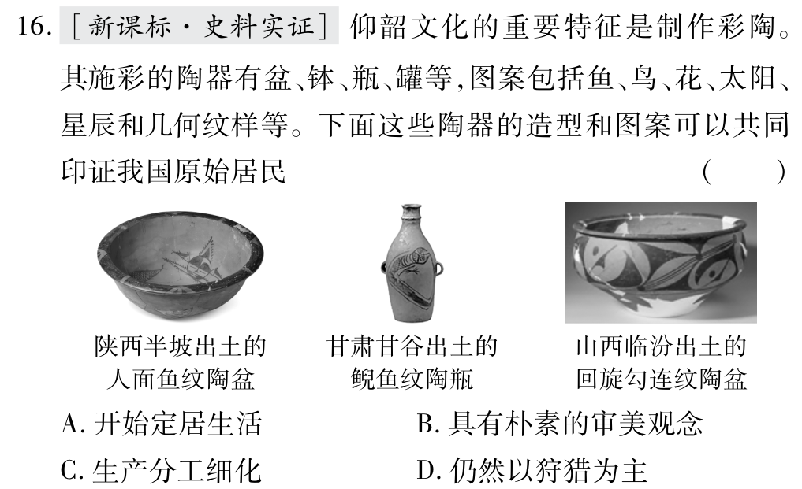

仰韶文化彩陶：
原始居民的审美观念：
虽然彩陶与定居生活有关，但彩陶的造型和图案本身不能直接印证定居生活，定居生活的证据是房屋遗址、聚落遗址等。
彩陶上的鱼纹、鸟纹等只是装饰图案，不能说明生产方式。仰韶文化已经是原始农耕文化，农业是主要生产方式。
虽然彩陶的制作需要技术，但彩陶的造型和图案本身不能直接说明生产分工细化，生产分工细化的证据是专门的手工业作坊遗址等。
材料中的关键信息是"造型和图案"，看到精美的造型和丰富的图案就要想到审美观念。
仰韶文化是新石器时代黄河中游的原始农耕文化，特征是彩陶、半地穴式房屋、磨制石器，原始居民种植粟，饲养家畜，不是以狩猎为主。
史料实证是指对获取的史料进行辨析，并运用可信的史料努力重现历史真实的态度与方法。
做史料实证题时，必须基于考古文物，分析文物的特征，推断文物能证明的历史信息，不能脱离文物主观臆断。
点击图片可放大查看
